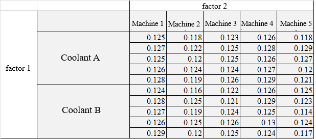
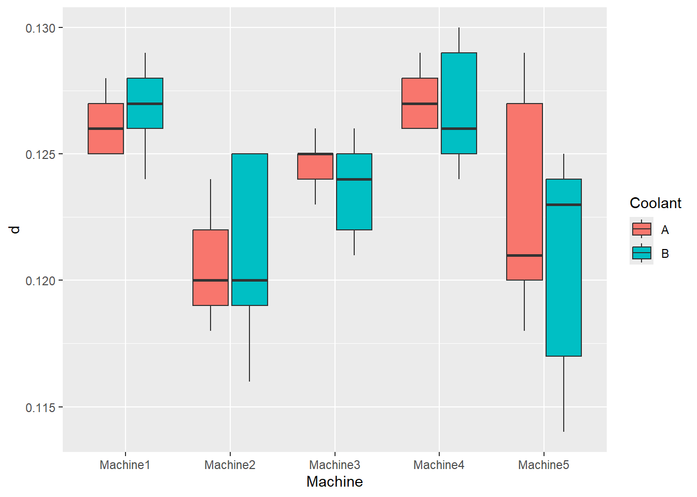

daneA <- read.table("CoolantA.txt", header=T)
daneB <- read.table("CoolantB.txt", header=T)Problem to be solved
5 measurements have been made of the diameter of a small element produced on 5 different machines using two different coolants A and B were made. It should be checked whether the type of coolant has any effect on the diameter of the elements produced.
The distinguishing factors are the machine number and the type of coolant. The problem was analyzed using a two-way analysis of variance, which examines the effect of two different qualitative independent variables (one - machine, the other - coolant) on a continuous dependent variable (the diameter of the element). The example and the numerical data have been taken from the guide: https://www.itl.nist.gov/div898/handbook/ppc/section2/ppc232.htm.
The numerical data are presented in the table in the figure below.

The null hypotheses to be tested using the Anova method:
$H0_1$: Factor 1 (coolant) has no effect on the dependent variable.
$𝐻0_2$: Factor 2 (Machine) has no effect on the dependent variable.
$𝐻0_{1-2}$: The interaction of factors 1 and 2 has no effect on the dependent variable.
Anova analysis and preparatory steps were performed in R (RStudio). Post-hoc analysis of pairwise comparisons was performed in Python.
Data Loading and Analysis
| Machine1 | Machine2 | Machine3 | Machine4 | Machine5 | |
|---|---|---|---|---|---|
| 1 | 0.125 | 0.118 | 0.123 | 0.126 | 0.118 |
| 2 | 0.127 | 0.122 | 0.125 | 0.128 | 0.129 |
| 3 | 0.125 | 0.120 | 0.125 | 0.126 | 0.127 |
| 4 | 0.126 | 0.124 | 0.124 | 0.127 | 0.120 |
| 5 | 0.128 | 0.119 | 0.126 | 0.129 | 0.121 |
| Machine1 | Machine2 | Machine3 | Machine4 | Machine5 | |
|---|---|---|---|---|---|
| 1 | 0.124 | 0.116 | 0.122 | 0.126 | 0.125 |
| 2 | 0.128 | 0.125 | 0.121 | 0.129 | 0.123 |
| 3 | 0.127 | 0.119 | 0.124 | 0.125 | 0.114 |
| 4 | 0.126 | 0.125 | 0.126 | 0.130 | 0.124 |
| 5 | 0.129 | 0.120 | 0.125 | 0.124 | 0.117 |
Data preparation for variance analysis
The data is recorded in the form of a ‘data frame’ where the first column is the diameter, the second column is the machine factor and the third column is the coolant type.
n <- dim(daneA)[1] # number of measurements
m <- dim(daneA)[2] # number of machines
k <- 2 # number of levels of factor 1 (coolant)
nag <- colnames(daneA)
srednice <- data.frame(data = NA, nrow = 2*n*m,ncol =3)
for(j in seq(1,m,1)){
for (i in seq(1,n,1)){
srednice[i+(j-1)*n,1] <- daneA[i,j]
srednice[i+(j-1)*n,2] <- nag[j]
srednice[i+(j-1)*n,3] <- "A"
}
}
for(j in seq(1,m,1)){
for (i in seq(1,n,1)){
srednice[n*m+i+(j-1)*n,1] <- daneB[i,j]
srednice[n*m+i+(j-1)*n,2] <- nag[j]
srednice[n*m+i+(j-1)*n,3] <- "B"
}
}
# columns as factors
srednice[,2] <- as.factor(srednice[,2])
srednice[,3] <- as.factor(srednice[,3])
# names of the columns
colnames(srednice)= c("d","Machine", "Coolant")
head(srednice) d Machine Coolant
1 0.125 Machine1 A
2 0.127 Machine1 A
3 0.125 Machine1 A
4 0.126 Machine1 A
5 0.128 Machine1 A
6 0.118 Machine2 AWykres pudełkowy
require(ggplot2)
ggplot(srednice, aes(x = Machine, y = d, fill = Coolant) ) +
geom_boxplot()

Anova Analysis
Anova analysis with interactions between factors was performed in R.
anowa <- aov(formula = d ~ Machine*Coolant, data = srednice)
summary(anowa) Df Sum Sq Mean Sq F value Pr(>F)
Machine 4 0.0003033 7.583e-05 8.766 3.52e-05 ***
Coolant 1 0.0000039 3.920e-06 0.453 0.505
Machine:Coolant 4 0.0000147 3.670e-06 0.424 0.790
Residuals 40 0.0003460 8.650e-06
---
Signif. codes: 0 '***' 0.001 '**' 0.01 '*' 0.05 '.' 0.1 ' ' 1Results
Anova showed that the factor that influenced the result (diameter $d$) in a statistically significant way was the Machine. This is shown by the probability value of p < 0.05 for the Machine factor only. The type of coolant has no influence (p >0.05), as do the interactions.This means that at least one of the machines produces parts that differ from the others in a statistically significant way.
To see which machines produce parts that are significantly different from the others, a pairwise comparison analysis should be performed using the Tukey HSD method. The analysis was performed using Python.
import pandas as pd
import numpy as np
import statsmodels
from scipy.stats import f_oneway
from statsmodels.stats.multicomp import pairwise_tukeyhsd
# Investigating the impact of the Machine factor
# r.srednice - a Python-level reference to an R object
tuk1 = pairwise_tukeyhsd(endog=r.srednice['d'],
groups=r.srednice['Machine'],
alpha=0.05)
print(tuk1) Multiple Comparison of Means - Tukey HSD, FWER=0.05
========================================================
group1 group2 meandiff p-adj lower upper reject
--------------------------------------------------------
Machine1 Machine2 -0.0057 0.0005 -0.0093 -0.0021 True
Machine1 Machine3 -0.0024 0.3398 -0.006 0.0012 False
Machine1 Machine4 0.0005 0.9948 -0.0031 0.0041 False
Machine1 Machine5 -0.0047 0.0052 -0.0083 -0.0011 True
Machine2 Machine3 0.0033 0.0889 -0.0003 0.0069 False
Machine2 Machine4 0.0062 0.0001 0.0026 0.0098 True
Machine2 Machine5 0.001 0.9335 -0.0026 0.0046 False
Machine3 Machine4 0.0029 0.171 -0.0007 0.0065 False
Machine3 Machine5 -0.0023 0.3824 -0.0059 0.0013 False
Machine4 Machine5 -0.0052 0.0016 -0.0088 -0.0016 True
--------------------------------------------------------# Investigating the impact of the Coolant factor
tuk2 = pairwise_tukeyhsd(endog=r.srednice['d'],
groups=r.srednice['Coolant'],
alpha=0.05)
print(tuk2)Multiple Comparison of Means - Tukey HSD, FWER=0.05
==================================================
group1 group2 meandiff p-adj lower upper reject
--------------------------------------------------
A B -0.0006 0.597 -0.0027 0.0016 False
--------------------------------------------------Investigating the impact of the Machine factor
The pairwise comparison result for the Coolant factor means that it has no statistically significant effect on element diameter (p > 0.05). The pairwise comparison results for the Machine factor were analysed in R, using the Python object obtained earlier (pairwise_tukeyhsd).
kombinacja <- function(dane){
# definition of a function which performs a combination of the levels of the ‘dane’ factor and saving it as a single-column data frame
elementy <- levels(dane) # levels of the factor "dane"
kombinacje <- combn(elementy,2,paste, collapse = "-", simplify = TRUE)
kombinacje <- as.data.frame(kombinacje)
return(kombinacje)
}
# kombinacja(srednice$Maszyna)Machines that differ in a statistically significant way
require(reticulate) # hub to Python
# number of possible combinations of 2 different numbers out of 5
n <- factorial(5)/factorial(2)/factorial(3)
kombi <- kombinacja(srednice$Machine) # possible combinations of Machines
# Search for results of pairwise comparisons with a probability of p < 0.05
wynik <- data.frame(NA)
pom <- rep(0,n)
p <- rep(0,n)
j <- 0
for (i in 1:n){
if ( py$tuk1$pvalues[i] < 0.05 ) { # R-level reference to a Python object
j <- j+1
pom[j] <- i
p[j] <- py$tuk1$pvalues[i]
}
}
# search results
for (i in 1:j){
wynik[i,1] <- kombi[pom[i],1]
wynik[i,2] <- p[i]
wynik[i,3] <- "significant"
}
colnames(wynik) <- c("pairwise comparisons", "p", "difference")| pairwise comparisons | p | difference |
|---|---|---|
| Machine1-Machine2 | 0.0004717 | significant |
| Machine1-Machine5 | 0.0051667 | significant |
| Machine2-Machine4 | 0.0001330 | significant |
| Machine4-Machine5 | 0.0016046 | significant |
Machines not statistically significantly different
# Search for results of pairwise comparisons with a probability of p > 0.05
wynik <- data.frame(NA)
pom <- rep(0,n)
p <- rep(0,n)
j <- 0
for (i in 1:n){
if ( py$tuk1$pvalues[i] > 0.05 ) { # R-level reference to a Python object
j <- j+1
pom[j] <- i
p[j] <- py$tuk1$pvalues[i]
}
}
# search results
for (i in 1:j){
wynik[i,1] <- kombi[pom[i],1]
wynik[i,2] <- p[i]
wynik[i,3] <- "not significant"
}
colnames(wynik) <- c("pairwise comparisons", "p", "difference")| pairwise comparisons | p | difference |
|---|---|---|
| Machine1-Machine3 | 0.3398099 | not significant |
| Machine1-Machine4 | 0.9947892 | not significant |
| Machine2-Machine3 | 0.0889036 | not significant |
| Machine2-Machine5 | 0.9334903 | not significant |
| Machine3-Machine4 | 0.1709501 | not significant |
| Machine3-Machine5 | 0.3824476 | not significant |
Summary
The ANOVA analysis showed that the effect of the type of coolant on the result in terms of part diameter is not statistically significant, while there are statistically significant differences between parts produced on different machines.
The results presented in the last table indicate that the machines can be divided into two interrelated groups:
Machine 1 - Machine 3 - Machine 4
Machine 2 - Machine 3 - Machine 5
The common element of both groups is Machine 3. Its products are the least different from the others. However, the differences that exist between the groups must be identified and eliminated.